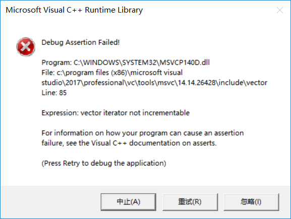

我踩过的c++的坑

![]()
c++坑还挺多的，以后每个坑我都记录下来
持续更新
在类的实例化时不能使用其他的类的构造函数
例如
TCHAR current_directiom[100];
GetCurrentDirectoryW(200, current_directiom);
Installer in(wstring(curren));
理论上没毛病。
但是在笔者的环境中in被视为一个函数而非一个类。
必须要写成
TCHAR current_directiom[100];
GetCurrentDirectoryW(200, current_directiom);
wstring path(current_directiom);
Installer in(path);
才行
char current_directiom[100];
GetCurrentDirectoryA(200, current_directiom);
string path = string(current_directiom) + string("\\data\\setting.ini");
而这样的却又是可以的，迷
两个指针作为参数不能重载运算符
QListWidget * operator<<(QListWidget *output, char *your_output);
这样的语句是错误的,为避免出现内置类型的重载，必须有一个及以上的参数为类或枚举类型
单例模式请务必加锁
今天偷懒，写了一个简化版的单例模式，没加异步锁，被别人看出来了。。。
别再using namespace std了
这会极大的污染命名空间。很容易产生c226不明确问题
替代方法 using xxx::yyy
xxx: 命名空间
yyy：标识符
关于switch
switch其实是一个流控制器。如果你用了比较传统的写法
...
case A :
...
break
那么你在A中定义的变量会一路传下来，这是不安全的。所以会报错。
解决方案：
...
case A :
{
...
}
break
让变量超出范围就消失就行了。
如果你下文的逻辑还要用到这个变量，就把它定义到swutch块前面去。
输入输出重定向的问题
不要在powershell中进行输入输出重定向，会报很多神奇的错误，改成cmd即可。
别在迭代器中使用erase
例如这段代码
for (auto num_ptr = digits.begin(); num_ptr != digits.end(); num_ptr++)
{
if (*num_ptr == 0)
{
digits.erase(num_ptr);
digits.push_back(0);
}
｝
会出现错误

这段错误在STL中的源码我也放下
if (this->_Getcont() == 0
|| this->_Ptr == 0
|| ((_Myvec *)this->_Getcont())->_Mylast <= this->_Ptr)
{ // report error
_DEBUG_ERROR("vector iterator not incrementable");
_SCL_SECURE_OUT_OF_RANGE;
}
this->_Getcont()的源码是
return (_Myproxy == 0 ? 0 : _Myproxy->_Mycont);
原来的迭代器在erase后已经失效了
解决方案
把迭代器自增分出来
for (auto num_ptr = digits.begin(); num_ptr != digits.end();)
{
if (*num_ptr == 0)
{
num_ptr = digits.erase(num_ptr);
digits.push_back(0);
}
else
{
num_ptr++;
}
}
stl算法的前后界陷阱
笔者在今天写代码的时候碰到了一个问题，max_element总是出错，找出来的不包括最后一个，一番研究后啼笑皆非。
我们使用这个函数对整个容器进行操作时，一定会用max_element(vec.begion(),vec.end())，其中的end()是最后一个迭代器的下一个。
但是我们在对容器的一部分进行操作时，却容易忘记掉，第二个参数的意义，最后导致少操作了一个。。。
关于system
严格来说，这个不能算是c++的坑，而应该算是c语言和c++一起搞出来的的坑。
system函数，总所周知，是不需要库的（c++），而我又好久没有写过pure c了，于是某日我在用pure c写代码时，突然发现system函数怎么命名空间里没有，而我那时恰好在给学妹演示代码，于是就变成大型翻车现场了…后来我发现，这个函数在c中其实放在stdlib.h里面。
我觉得c++标准库不再需要标明.h是一个重大的创举2333
关于相对路径
需要注意的是当你使用相对地址，或者使用某些库求地址的库时，其基准地址会存在陷阱。
对于代码a.txt按照道理你想要达成的是通过相对地址访问与程序同一个层次的a.txt。
- 对于直接运行程序来说，你得到的就是正确的结果。
- 对于命令行运行的程序例如.\xxx\a.exe时，你的基准地址为命令行的工作目录，这就会导致你访问不到，或者访问了错误的a.exe。
关于类的定义先后
在vs中偶遇
error C2143: 语法错误: 缺少“;”(在“<”的前面)
note: 参见对正在编译的类 模板 实例化“LList”的引用
error C4430: 缺少类型说明符 - 假定为 int。注意: C++ 不支持默认 int
error C2238: 意外的标记位于“;”之前
error C2143: 语法错误: 缺少“;”(在“<”的前面)
error C4430: 缺少类型说明符 - 假定为 int。注意: C++ 不支持默认 int
error C2238: 意外的标记位于“;”之前
error C2143: 语法错误: 缺少“;”(在“<”的前面)
error C4430: 缺少类型说明符 - 假定为 int。注意: C++ 不支持默认 int
error C2238: 意外的标记位于“;”之前
这样的一大堆错误。
我当时看了很长时间都没发现错误，而且静态检测中也没报错。就是实例化后会出现类型推倒失败。我开始也以为是类的前后问题。但是因为内含类未报错。所以也就没有接着看了。
再把组合的成员声明放在总成员上后，问题就解决了。
总的来说vs，这方面的问题检验还有点问题。所以以后看到这样的错误要自己注意下LOL。
有关于类多重引用的顺序
设有A,B两类
class A
{
private:
int a,b;
public:
A(B b):
a(b.a),b(b.b)
{}
}
class B
{
private:
int a,b;
public:
B(A a):
a(a.a),b(a.b)
{}
}
这样子的代码是错误的，因为编译器是自顶而下编译的，在编译A类时，不知道B类的情况，甚至不知道B类。
那我们改一下，提前告诉编译器A类的存在
class B;
class A
{
private:
int a,b;
public:
A(B b):
a(b.a),b(b.b)
{}
}
class B
{
private:
int a,b;
public:
B(A a):
a(a.a),b(a.b)
{}
}
这样子可以了吗？答案是这样子也是不行的，因为在A类中用到了b.a这样的东西，而编译器虽然知道B的存在，但是也就仅仅知道它的存在，换言之，这是个不完整类型。而编译器不能访问不完整类型的成员。
可以改成指针形式
class B;
class A
{
private:
int a,b;
public:
A(B *b):
a(b->a),b(b->b)
{}
}
class B
{
private:
int a,b;
public:
B(A a):
a(a.a),b(a.b)
{}
}
这样子就可以解决问题了
如果你一定不要指针的话，也可以，那你可以把类内方法的实现放到两个类下面
class B;
class A
{
private:
int a,b;
public:
A(B *b)；
}
class B
{
private:
int a,b;
public:
B(A a);
}
A::A(B *b):
a(b->a),b(b->b)
{}
B::B(A a):
a(a.a),b(a.b)
{}
stl迭代器陷阱
今天在用stl迭代经典算法时偶遇问题
果然像是这种问题，还是没有成体系学习stl甚至c++的锅。
iterator not incrementable
vector iterators incompatible
这些问题碰到了很多次，原因这里简单记一下
- 迭代器在容器增加，删除时很容易失效，特别是erase函数，此时就会出现不兼容错误，因为此时迭代器的行为是不可预测的。
- 在使用memset时很容易弄坏几个指针，就会报错
解决方法
- 不使用memset简单粗暴操作
- 在敏感操作后的迭代器应该重新获得，可以存储偏移，也可以使用敏感操作的返回值重新获得
反思
不再土法学习c++，继续系统化
类的静态变量需要定义
符号未定义…….static…..
如果出现这种问题，说明你没有定义类的静态变量。你至少需要在一个.cpp中定义一次
与普通便量不同，此处不会触发重定义
命令行程序的缓冲区
有些人（我），为了程序看上去比较骚气
会使用
_wsystem(L"title 停车 -xxxx"); // 宽字节版
system("color F0");
system("mode con cols=36 lines=25");
这样的代码。
然后我们就会发现少了一个很重要的东西，滚条。
如果一屏幕放不下就看不见上面的数据了
解决方法
#include
......
HANDLE con = GetStdHandle(STD_OUTPUT_HANDLE);
COORD buf = { 36,200 };
SetConsoleScreenBufferSize(con, buf);
使缓冲区变大
缓冲区长度高于窗口时会有竖直的滚动条，反之反之，缓冲区应大于窗体